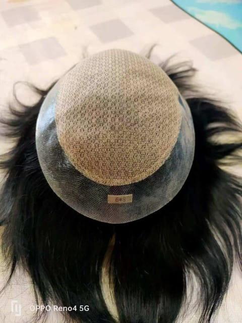
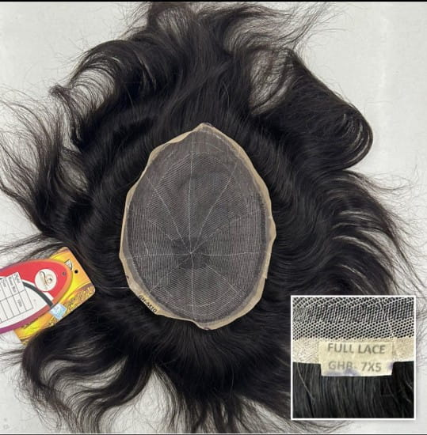
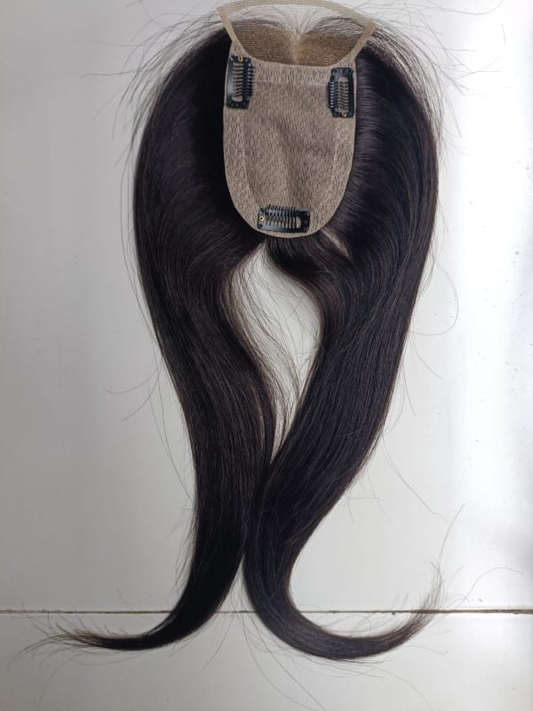

विशेष हेयर समाधान
कमजोर बालों, झड़ते बालों या गंजेपन से परेशान हैं? जानिए कैसे हमारे आधुनिक नॉन-सर्जिकल हेयर सिस्टम से आपको तुरंत नया और प्राकृतिक लुक मिलता है।
जेनेटिक्स, तनाव या आगे की हेयरलाइन घटने से सिर का ऊपरी हिस्सा खाली दिखने लगता है। बालों का झड़ना अब आपके आत्मविश्वास को कम न होने दें।
हमारे हेयर पैच आपके बालों के रंग, टेक्सचर और उगने की दिशा से ऐसे मेल खाते हैं कि कोई पहचान नहीं सकता कि यह पैच है।
न कोई दर्द, न सर्जरी के निशान और न ही लंबा आराम। हमारे सैलून में आइए और सिर्फ 2 घंटे के अंदर घने बालों के साथ बाहर जाइए।
चाहे आप जिम जा रहे हों, तैराकी (swimming) कर रहे हों या अपने बालों को पीछे की ओर सेट कर रहे हों, हमारे सांस लेने योग्य (breathable) स्विस लेस सिस्टम मजबूत और पसीने से सुरक्षित पकड़ देते हैं।
विस्तृत जानकारी (Complete Guide)
जानिए बाल झड़ने के कारण से लेकर, पैच की क्वालिटी, फिटिंग और इसकी देखभाल करने के पूरे तरीके को विस्तार से।

अत्यधिक तनाव, जेनेटिक्स (वंशानुगत), हार्मोन्स में बदलाव और खान-पान की खराबी के कारण ज्यादातर पुरुषों में सिर के ऊपरी हिस्से (Crown) या आगे की हेयरलाइन के बाल तेजी से झड़ने लगते हैं।
जब दवाइयों या तेल से बाल वापस नहीं आते, तब **नॉन-सर्जिकल हेयर पैच** सबसे बेहतरीन और तुरंत असर दिखाने वाला उपाय बनता है। इसमें बिना किसी ऑपरेशन के आपको एकदम नेचुरल घने बाल मिलते हैं।

हम ग्राहकों की जरूरत और बजट के अनुसार अलग-अलग प्रीमियम क्वालिटी के बेस और बाल उपलब्ध कराते हैं:
यह बेहद पतला और पारदर्शी होता है। इसकी फ्रंट हेयरलाइन इतनी असली दिखती है कि आप बालों को पीछे की तरफ (Slick-back) भी झाड़ सकते हैं।
यह बहुत मजबूत और टिकाऊ होता है, जो लंबे समय तक रोजाना इस्तेमाल के लिए सबसे बेस्ट माना जाता है।
इसमें आगे की तरफ बेहद बारीक कारीगरी होती है जिससे पास से देखने पर भी हेयरलाइन एकदम प्राकृतिक और असली नजर आती है।
यह सिर पर बिल्कुल त्वचा की तरह चिपक जाता है, जिससे नेचुरल स्कैल्प का लुक मिलता है और सफाई करना बेहद आसान होता है।
नहीं, आपको अपनी रोजमर्रा की जिंदगी में किसी भी तरह का बदलाव करने की जरूरत नहीं है। हमारे द्वारा फिक्स किए गए पैच वाटरप्रूफ होते हैं। आप आराम से बारिश में भीग सकते हैं, हेड बाथ ले सकते हैं और सैलून में आकर अपने बालों की शैम्पू और कंडीशनिंग करवा सकते हैं।

**हाँ, बिलकुल!** हमारे द्वारा इस्तेमाल किए जाने वाले मेडिकल-ग्रेड ग्लू और वाटरप्रूफ टेप इतने मजबूत होते हैं कि वे पसीने, पानी और तेज हवा में भी अपनी जगह से नहीं हिलते।
आपको बस हर 3 से 4 हफ्ते में हमारे सैलून में आकर इसकी री-फिक्सिंग (सफाई और दोबारा फिक्सिंग) करवानी होती है, जिससे आपकी स्किन हेल्दी रहे और पैच हमेशा नया जैसा दिखे।